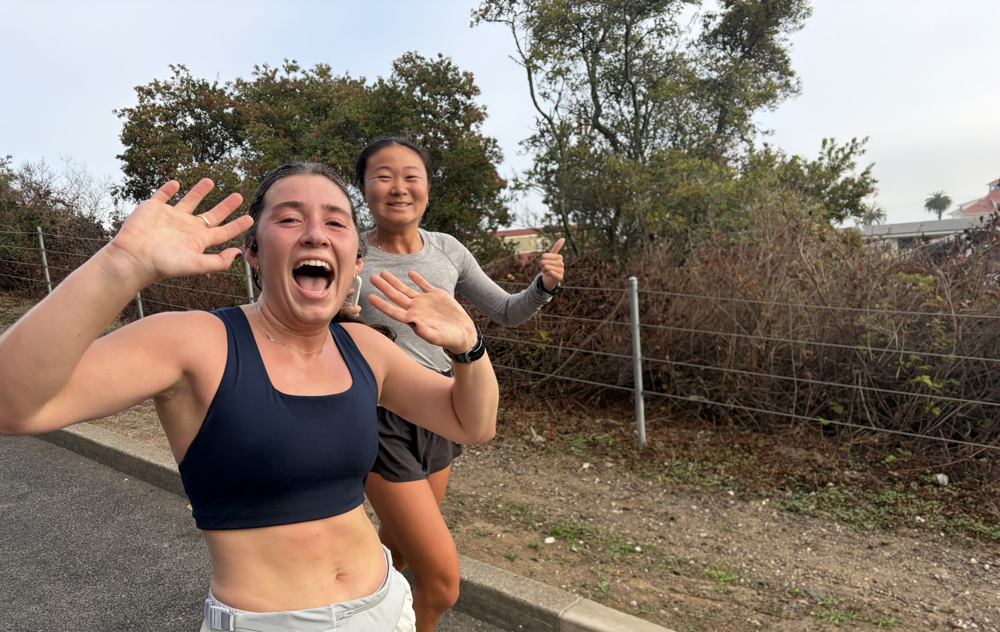
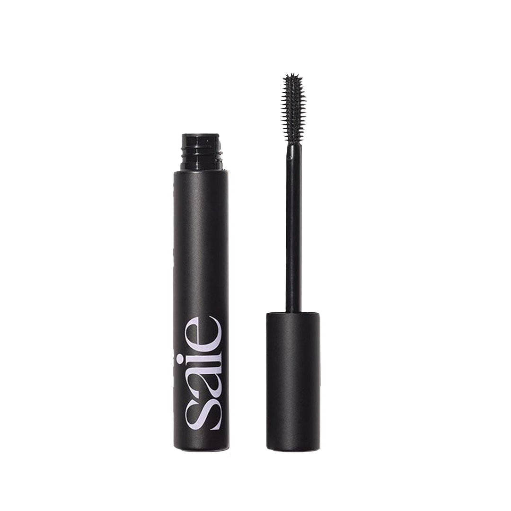
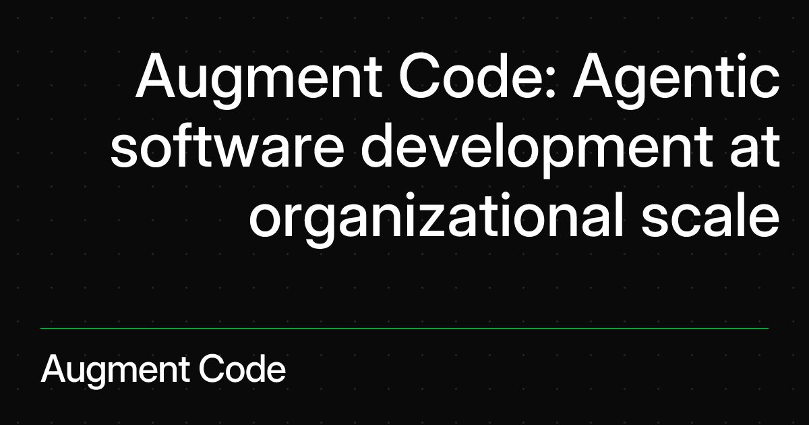
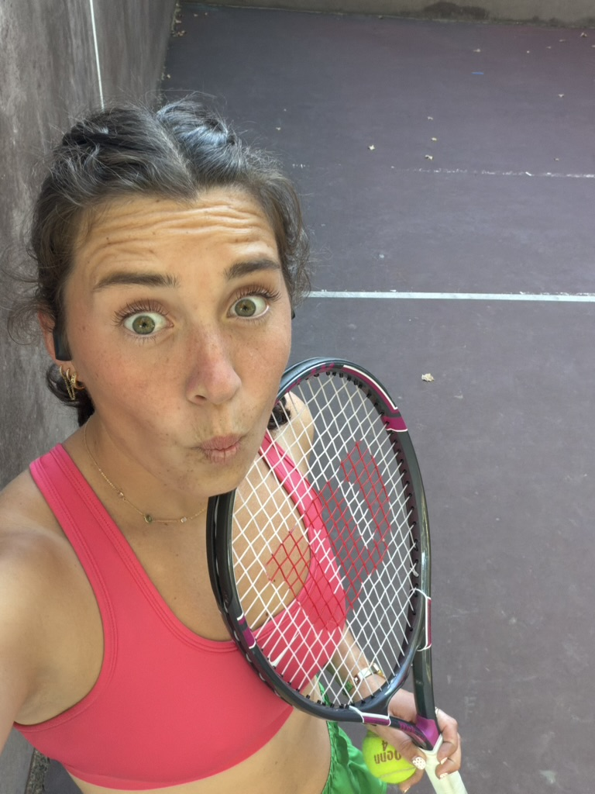
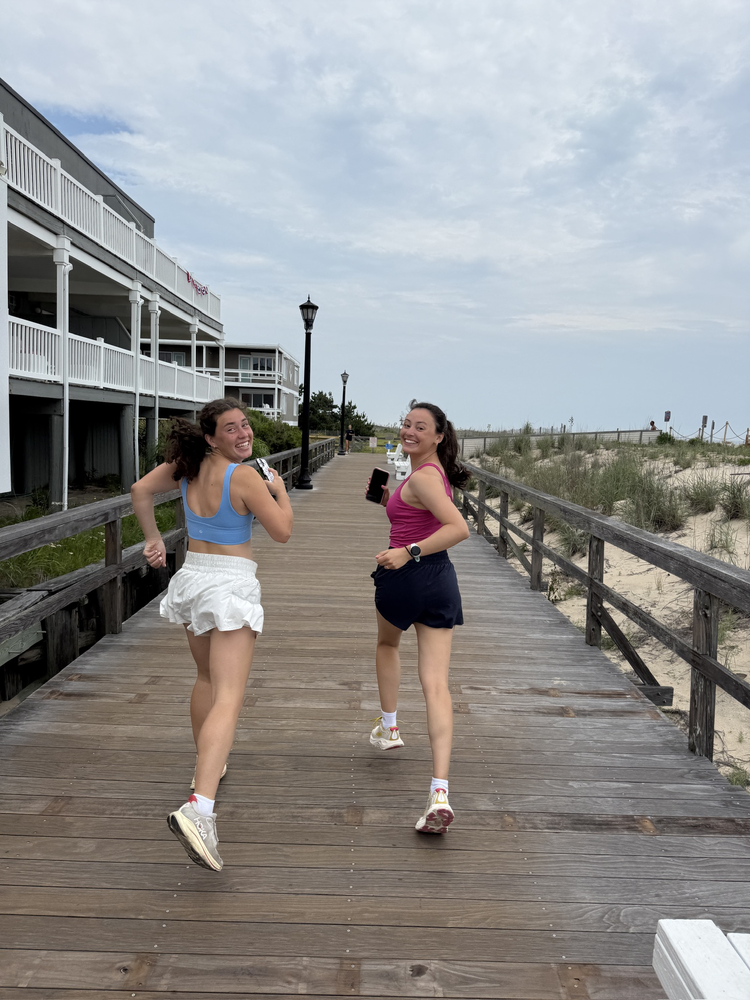

abby dulski
abby dulskiSummer feels like it's in full swing. Here are five things I've been using constantly. A mix of practical and fun, no real theme other than I'd notice if any of them disappeared.
july 13, 2026
my favorite five things for summer 2026
a few things that I have been using a lot.

01
Shokz OpenRun
Bone conduction, so it feels like running with a speaker strapped to your head (except you can still hear everything around you). When I ran a lot in Boston where both cars and pedestrians weren't following traffic signs, being able to hear outside noise was crucial. Also useful for every day like cooking in a kitchen when your roommate might ask you something mid-recipe. They are extremely lightweight and fit great. I sometimes forget I have them on.

02
Saie Mascara 101
I sweat, cry, and wipe my eyes a lot more than a mascara-lover should. This mascara does not budge. The tube also lasts about 3 times longer than my drugstore mascara's would, and rarely clumps upon application. I use the brown, which I have found with my brown hair gives a more natural and subtle look than the pure black I used to use.

03
Augment Code
The specific tool I use is very subject to change, but AI-assisted development is life changing. I have never been able to sit down and make as much progress on a site like this as I can now. It feels much less like a technical project and much more like an idea expression and product project. I recently mocked up a redesign for my company's entire site with it too. It feels like I can build whatever I picture; an MVP's now the standard.

04
Wilson Intrigue SE Tennis Racquet
Started taking lessons at the local public park this summer and this racquet has been a great beginner pick: cheap, lightweight, and forgiving while I figure out what I'm doing. Tennis has been a great way to move my body and feel good while playing a sport, not just grinding through a workout. There is also a mental piece to it. Learning new coordination, new positioning, and figuring out what I am supposed to be doing at any given moment.

05
Free People Get Your Flirt On Shorts
My favorite running shorts. Cute, come in fun colors (the orange and white are my faves), and people constantly mistake them for a skirt. I've run in a lot of shorts that are too short or too tight or I chafe a ton, but I have not had an issue with these. They are high-waisted enough that they look and feel good with just a sports bra on top too, if that's your thing.